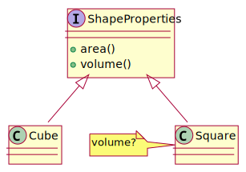

design patterns
gergo.pinter@uni-corvinus.hu

software design and architecture stack
![based on Khalil Stemmel’s figure [1]](figures/the_software_design_and_architecture_stack_generalized.drawio.svg)
bridge pattern (structural)


{kind=link}
interface segregation principle
states that many client-specific interfaces are better than one general-purpose interface. Clients should not be forced to implement a function they do no need.


example based on [7]
dependency inversion principle
Dependency inversion principle says that modules should depend upon interfaces or abstract classes, not concrete classes. It’s an inversion because implementations depend upon abstractions and not the other way round. [8]

increases reusability
topologies
Object-oriented design (OOD) is the process of planning a system of interacting objects to solve a software problem [13].
control flow? structure?
![historically grown architecture based on [14]](figures/legacy_structure.drawio.svg)


server/client architecture
- consists of two parts
- client and server
- distributed
- always the client initiates a connection to the server
- while the server process always waits for requests from any client
message bus
- shared communication channel that connects multiple components or services
- simple, extensible


layered
number of layers in a layered architecture is not set to a specific number
- presentation layer (a.k.a. UI layer, view layer)
- responsible for user interactions with the software system
- application layer (a.k.a. service layer)
- aspects related to accomplishing functional requirements
- business (logic) layer
- responsible for algorithms, and programming components
- data access layer (a.k.a. persistence layer)
- responsible for handling data, databases

user statistics example
as a user I want to see my activity to see my progress
- display user statistics including
-
- username
- profile image
- registration date
- progress in course
- daily activity in the current month

architecture v1

send everything to the UI
architecture v2

send only the aggregated data

architecture v2 - class

data collector still has the whole user data but that aligns with its purpose
data aggregator calculates everything and the UI only displays it
architecture v2.1 - class


UI might be on a client
different code base, different language
architecture v3
make the database aggregate the data
architecture v3 - SQL

for the progress:
SELECT
lesson / 50.0 AS progress
FROM activity
WHERE
user_id = 42 AND
result = 'success'
ORDER BY
lesson DESC
LIMIT 1;